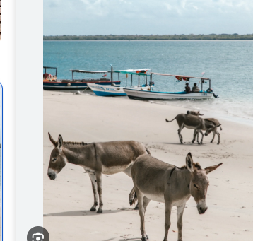

Where History Meets the Indian Ocean

Malindi is one of Kenya's oldest coastal towns, located about 120 km northeast of Mombasa. It is famous for its beautiful beaches, Swahili culture, historical landmarks, marine parks, and vibrant tourism industry.
The best months to visit Malindi are from July to March, when the weather is sunny and ideal for beach holidays and water sports.
| Package | Price |
|---|---|
| Historical Tour | From KSh 12,000 |
| Marine Park Tour | From KSh 10,000 |
| Beach Photography | FREE |